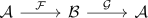

left derived functor for a composition with an exact functor
Proposition
Let $\mathcal{A}, \mathcal{B}, \mathcal{C}$ be abelian categories,

be left exact functors where $\mathcal{G}$ is also exact. Suppose $\mathcal{F}$ admits a left derived functor, then the left derived functor of the composition is given by
\begin{align*}
\{L \mathcal{GF}_n\}_n = \{\mathcal{G}(L \mathcal{F}_n)\}_n
\end{align*}